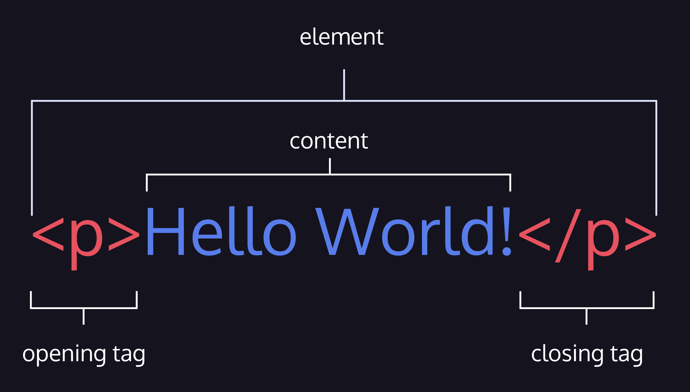
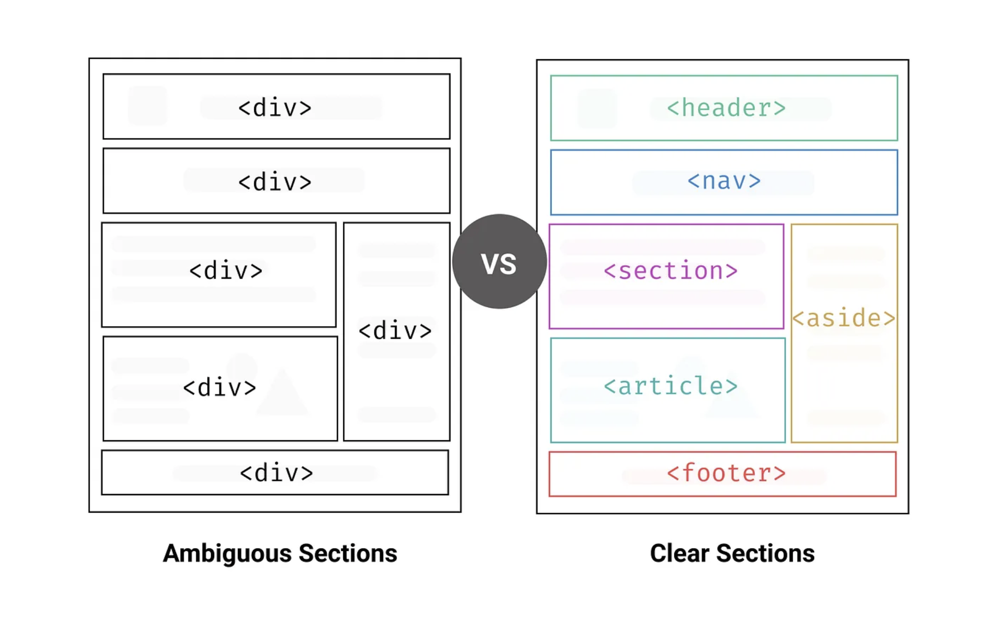

Frontend Web Development
HTML
Съдържание
- Въведение в HTML
- Интересни факти и история за HTML
- HTML синтаксис
- Основни HTML елементи
- HTML семантика
- HTML таблици
- HTML форми
- HTML5 - нововъведения
- Добри практики и съвети
- Заключение
1. Въведение в HTML
HTML е акроним, означаващ
"HyperText Markup Language".
HyperText дава възможност на потребителите да навигират в уеб пространството чрез
хипервръзки,
които от своя страна препращат към други уеб локации.
Това е стандартният маркиращ език за създаване на уеб страници и уеб приложения. С помощта на HTML, авторите описват структурата и семантиката на уеб съдържанието.
Браузърите от своя страна интерпретират HTML кода, за да визуализират съдържанието на потребителите.
HTML е компютърен език за маркиране, а не програмен език.
Това означава, че HTML не може да извършва действия (като да изчислява математически изрази). Вместо това, HTML предоставя:
- структура: определя формата и подредбата на уеб съдържанието.
- семантика: определя значението на уеб съдържанието.
HTML продължава да се развива, за да отговори на изискванията и нуждите на Интернет общността. HTML5 е петата и последна основна версия, която е препоръка на World Wide Web Consortium (W3C). Актуалната спецификация е известна като HTML Living Standard. Тя се поддържа от Web Hypertext Application Technology Working Group (WHATWG), консорциум на водещите производители на браузъри (Apple, Google, Mozilla и Microsoft).
HTML документите са файлове, които завършват с разширение .html или .htm.
В най-простата си форма, така изглежда един HTML документ:
<!DOCTYPE html>
<html>
<head>
<title>Моята Първа Уеб Страница</title>
</head>
<body>
<h1>Здравей, ФМИ!</h1>
</body>
</html>
Всеки HTML документ започва със специален етикет, наречен <!DOCTYPE html>.
Този таг показва на браузъра, че това е HTML документ.
След това, следва елементът <html>, който съдържа целия HTML
код.
Елементът <head> съдържа метаданни, които не се
показват на
потребителите, но са полезни за браузъра и търсачките.
Елементът <body> съдържа всички видими елементи на
страницата.
2. Интересни факти и история за HTML
Историята на HTML започва с Тим Бърнърс-Лий, инженер и учен-физик в CERN (Европейски център за ядрени изследвания) в Женева, Швейцария. През 1989 г., той създава концепцията за система, която позволява на изследователите да споделят информация посредством хипертекстови документи, свързани с хипервръзки.
Тим Бърнърс-Лий

През 1990 г., Тим Бърнърс-Лий разработва първия уеб сървър (CERN httpd) и уеб браузър под наименованието "WorldWideWeb" (не се бъркайте с Интернет). Този браузър е първият, който позволява на потребителите да създават и преглеждат уеб страници.
Първият уеб браузър

През лятото на 1991 г. проектът "WWW", покорил вече учените в Европа, пресича океана и се влива в проекта "Internet".
Възниквaт нови понятия като: URL, HTTP, TCP и др.
Първият уебсайт е направен в CERN и се появява онлайн на 6 август 1991 г.
Първият уебсайт
Еволюция на HTML
HTML 1.0: е първата версия на HTML, която бива публично представена през 1991 г. Тази версия включва базови елементи и функции, необходими за създаване на хипертекстови документи.
Характеризира се с прости етикети (тагове) и ограничени възможности за структуриране и дизайн.
HTML 2.0: Публикувана през 1995 г., HTML 2.0 внася по-нататъшни подобрения в структурата на уеб страниците, като включва таблици и форми.
HTML 3.2: Тази версия, представена през 1997 г., предоставя по-напреднали възможности за дизайн и внася още допълнителни елементи.
HTML 4.0: Последната версия на HTML 4 е публикувана през 1999 г. Тя включва богати възможности за структуриране и дизайн на уеб страници, включително CSS (Cascading Style Sheets) и събития в JavaScript.
XHTML (eXtensible HyperText Markup Language) бива въведен през 2000 г. като стриктна XML-базирана версия на HTML. Целта е да увеличи се съвместимостта на уеб страниците, така че XHTML документите, обработени с XML анализатори, да бъдат по-лесно четими и обработвани от компютърни програми.
Важно да се отбележи: С развитието на HTML5 и CSS3, стандартите се променят, съответно и използването на XHTML.
3. HTML синтаксис
Анатомия на HTML елемент
HTML се състои от елементи. Тези елементи структурират уеб страницата и определят нейното съдържание. Нека да разгледаме как се пишат.
Важно е да отбележим, че не всички HTML елементи следват модела на отварящ таг, съдържание и затварящ таг. Някои елементи се състоят от единичен таг. Такива елементи се наричат елементи без съдържание (void elements).
Например елементът img се използва за вмъкване на изображения и изглежда
така:
Един HTML документ е като голямо родословно дърво с родители, братя и сестри, деца, предци и потомци. HTML елементите могат да съдържат други елементи. Това се нарича влагане (nesting), и за да се извърши правилно, целият елемент трябва да бъде между началния и крайния таг на съдържащия елемент (родителя).
В този пример, елементите от списъка li са вложени в елемента на неподреден
списък
ul
Честа грешка, допускана при влагане на елементи, е да се затвори родителският елемент, преди да е затворен елементът, който съдържа (неговото дете).
В този пример, елементите са неправилно вложени, защото елементът strong
трябва да е
бил затворен преди a (anchor).
Вече видяхме няколко HTML тага като неподреден списък <ul>,
параграф <p> и други.
Досега ги разглеждахме в най-базовата им форма, но повечето от HTML таговете могат също да имат и атрибути.
Атрибутите се използват за определяне на характеристиките на HTML елементите и се поставят в отварящия таг на елемента. Всички атрибути са съставени от две части - име и стойност.
Пример за дефиниране на атрибут
В този пример:
hrefе името на атрибутаhttps://www.fmi.uni-sofia.bgе стойността на атрибута
Основни атрибути
В HTML има някои основни атрибути, които могат да се използват в повечето HTML елементи, за да предоставят общи характеристики и поведения. Ето някои от най-често използваните основни атрибути:
id- уникално идентифицира елемента в документаclass- определя класа на елементаstyle- определя стиловете на елемента
Булеви атрибути
Булевите атрибути в HTML са атрибути, които имат само две стойности: наличие и липса. Те не изискват стойности, за да бъдат активирани и обикновено се използват за задаване на различни настройки на елементите.
Например, атрибута disabled се използва за деактивиране на елементи като
бутони.
HTML коментари
Коментарите са начин за вмъкване на текст в изходния код на уеб страница, който не се изобразява в браузъра на потребителя, но може да бъде полезен за разработчиците и документирането на кода.
За да добавите HTML коментар, използвайте следния формат:
4. Основни HTML елементи
HTML елементите могат да бъдат разделени в две категории:
- Блокови елементи - обикновено се използват за структуриране на съдържанието на уеб страницата.
- Инлайн (редови) елементи са предназначени за разграничаване на част от текста, за да му придадат конкретна функция или значение.
Блокови елементи
Някои от най-често използваните блокови елементи са:
<div>- дефинира секция на документа<h1>- дефинира заглавие<p>- дефинира параграф<ul>- дефинира неподреден списък<ol>- дефинира подреден списък<li>- дефинира елемент на списък<table>- дефинира таблица<form>- дефинира форма
Инлайн (редови) елементи
Някои от най-често използваните инлайн елементи са:
<span>- дефинира inline контейнер за текст<a>- дефинира хипервръзка<img>- дефинира изображение<button>- дефинира бутон<input>- дефинира поле за въвеждане на данни<label>- дефинира етикет за поле за въвеждане на данни<select>- дефинира падащо меню
Списък с HTML елементи
В следващите слайдове ще разгледаме някои от най-често използваните HTML елементи.
За повече информация, моля, посетете MDN Web Docs.
Заглавни елементи
Заглавните елементи се използват за създаване на структура и идентификация на различни части на
уеб
страницата. Те се маркират от <h1> до <h6>, като
<h1> има най-голям размер и важност, а <h6> - най-малък.
Параграф
Елементът за параграф <p> се използва за оформяне на обособени блокове от
текста в HTML документа. Той автоматично добавя отстояние, което го отделя от другите елементи
на страницата.
Списъци
С HTML можете да създавате неподредени списъци (<ul>), както и номерирани
списъци
(<ol>).
Division <div>
Елементът <div> се използва за групиране на други елементи. Той се използва
за
създаване на контейнери без семантично значение.
Изображение <img>
Елементът <img> се използва за вмъкване на изображения в уеб страниците:
Атрибутът src указва URL адреса (източника) на изображението, а
alt
предоставя алтернативен текст, който се показва ако изображението не може да бъде заредено.
Хипервръзка <a>
Елементът <a> се използва за създаване на хипервръзки към други уеб страници
или ресурси.
За отваряне на връзката в нов раздел на браузъра, може да използвате атрибута
target
със стойност _blank:
<button>
Използва за създаване на бутони в уеб страници. Той може да бъде използван за инициализиране на различни действия, като например изпращане на формуляри, отваряне на прозорци и др.
<span>
Елементът <span> се използва за групиране на фрагменти в документа.
<span> няма пряко влияние върху форматирането на съдържанието, но може да
бъде
използван за приложение на стилове чрез CSS:
<em> и <strong>
В HTML, <em> и <strong> тагове се използват за ударение на
текст.
По подразбиране, браузърите форматират текста в <em> като курсив и текста в
<strong> като удебелен.
Въпреки това, използването на тези тагове се отнася по-скоро до значението, което искате да
придадете:
<em> означава, че текстът има особено ударение или иначе казано се намира
в
отличителен глас,
докато <strong> подчертава важността на текста.
<b> и <i>
Елементите <b> и <i> се използват за форматиране на текста
като съответно удебелен и наклонен текст:
<b> удебелява текста, докато <i> го прави наклонен.
Въпреки това, HTML5 препоръчва използването на <strong> вместо
<b> и <em> вместо <i> за да се подсили
семантичният аспект на текста.
<br> и <hr>
Елементите <br> и <hr> се използват за вмъкване на нов ред
и хоризонтална линия, съответно:
<br> се използва за прекъсване на текстов ред, а
<hr>
създава визуално разделение между разделите чрез добавянето на хоризонтална линия.
<sup> и <sub>
Елементите <sup> и <sub> се използват за издигане на текст
и понижаване на текст спрямо основната линия на текста:
<pre> и празните пространства в HTML
Във всяка HTML структура, множеството интервали или водещи и следващи интервали се съкращават до един единствен интервал. Нови редове също се игнорират. Но какво ако искаме да запазим оригиналното форматиране на текста, включително интервалите и новите редове?
Ето къде елементът <pre> идва на помощ. Той се използва за представяне на
предварително форматирани текстове.
Текстът, обграден от таговете <pre> запазва всички интервали и нови
редове, които са включени в него.
5. HTML семантика
HTML семантиката се отнася до правилното и смислено структуриране на уеб съдържание чрез използването на подходящи HTML елементи.
Тя помага за:
- Подобряване на достъпността - семантични HTML елементи, прочетени от екранни четци, улесняват достъпа до уеб съдържанието за хора с увреждания.
- Подобряване на SEO - семантичните елементи правят уеб страниците по-лесно интерпретируеми от търсачките.
Пример за семантична HTML страница:
Примери на семантични елементи:
<header>- Заглавна част на страницата.<nav>- Навигационно меню.<main>- Основното съдържание на страницата.<article>- Самостоятелна новина, блог пост или статия.<section>- Секции в документа.<aside>- Допълнителна информация или реклами.<footer>- Долен колонтитул на страницата.
<header>
Елементът <header> обикновено съдържа група от встъпителни или навигационни
помощни средства. Той може да съдържа логото на сайта, името на сайта, навигация и
т.н.
<nav>
Елементът <nav> представлява секция на страницата, която съдържа навигационни
връзки, които водят до други страници или до различни части на същата страница. Използва се за
основните навигационни блокове на сайта, като менюта, индекси и др.
<main>
Елементът <main> определя главното или уникалното съдържание на документа,
което се отличава от повтарящи се блокове на страницата, като навигационната лента или основното
меню. Всяка страница трябва да има само един <main> елемент.
<section>
Елементът <section> представлява семантичен блок в HTML, който служи за
групиране на съдържание около обща тема или функция.
<article>
Елементът <article> представлява независима, самостоятелна част от документ,
която обикновено се използва за групиране на съдържание, което може да се разпространява или се
използва независимо от останалата част от страницата.
<aside>
Елементът <aside> представлява част от страницата, чието съдържание е отделно
от съдържанието около него и което, ако се премахне, не би нарушило потока на документа.
Обикновено се използва за връзки с други части на сайта, реклами, цитати и други елементи.
<footer>
Елементът <footer> определя долна част или долен колонтитул на документ или
раздел.
Той обикновено съдържа информация относно автора на документа, декларация за авторски права,
връзки към документи с правила и условия, контактна информация и др.
6. HTML таблици
<table>
Таблиците се използват за представяне на информация в редове и колони. Те се състоят от един или
повече редове, дефинирани от елемента <tr> и един или повече елементи за
колони, дефинирани от елемента <td>.
<th>
Елементът <th> се използва за дефиниране на заглавна клетка в таблицата. Той
обикновено се поставя в първия ред на таблицата.
<caption>
Елементът <caption> се използва за дефиниране на заглавието на таблицата.
Той трябва да бъде поставен веднага след отварящия таг на таблицата.
<thead>, <tbody>, <tfoot>
Елементи <thead>, <tbody> и <tfoot> се
използват, за да групират съответно заглавните клетки, основното съдържание и долната част на
HTML таблици. Те помагат за по-добра организация и стилизация.
Име
Фамилия
Петър
Петров
Иван
Иванов
Общо 2 записа
<table> атрибути
border- определя дебелината на границата на таблицата.cellpadding- определя отстоянието между съдържанието на клетките и границата им.cellspacing- определя отстоянието между клетките на таблицата.
<td> атрибути
colspan- определя колко колони заема клетката.rowspan- определя колко реда заема клетката.
<colgroup> и <col>
Елементите <colgroup> и <col> се използват за задаване на стилове за една или повече колони в HTML таблица, без да се налага да форматирате всеки отделен елемент <td> или <th>.
Примерен код за използване на <colgroup> и <col> в HTML
таблица
Вложени таблици
В HTML е възможно да се влагат таблици в клетките на други таблици. Този подход може да бъде полезен при създаването на сложни формати и изгледи. Въпреки това, препоръчително е да се избягва използването на вложени таблици, колкото е възможно, тъй като те могат да увеличат сложността на кода и да затруднят неговата поддръжка, особено при адаптивен дизайн за различни размери на екрана и устройства.
7. HTML Форми
<form>
Формите са елементи, които се използват за събиране на информация от потребителите. Те се състоят от елементи за въвеждане на данни, като текстови полета, падащи менюта, бутони за избор и др.
<form> атрибути
action- указва URL адреса на страницата, към която ще бъдат изпратени данните от формата.method- указва HTTP метода, който ще бъде използван за изпращане на информацията от формата. Най-често използваните методи саGETиPOST.
<input>
Елементът <input> е един от най-използваните елементи при създаване на HTML форми. Той се
използва за създаване на различни видове полета за въвеждане, чието поведение се определя от
стойността на атрибута type.
<input> атрибути
type- определя типа на полето.name- определя името на полето, което ще бъде използвано за идентифициране на данните от него.value- определя стойността на полето.required- указва дали полето е задължително за попълване.
Примери за различни типове <input> полета:
- text: Стандартно поле за въвеждане на текст
- password: Поле за въвеждане на парола, където входът се скрива
- radio: Позволява избора на един вариант измежду няколко
- checkbox: Позволява избор на множество възможности
- email: Специализирано поле за въвеждане на електронни пощи
- date: Позволява избор на дата
- number: Ограничава входа до числови стойности
<input type="radio">
Елементът <input type="radio"> дефинира радио бутон. Радио бутоните се използват, когато има няколко възможни опции, от които потребителят може да избере точно една.
<input type="checkbox">
Елементът <input type="checkbox"> дефинира поле за отметка. Такива полета се използват, когато има няколко възможни опции, от които потребителят може да избере няколко.
<label>
Елементът <label> в HTML служи за създаване на описателни етикети за други елементи. Когато се използва във форма, <label> улеснява разбираемостта и подобрява достъпността. Добра практика е да се свърже елементът <label> със съответното поле за въвеждане чрез атрибута `for`, като стойността трябва да съвпада с `id` на полето за въвеждане.
<select>
Елементът <select> се използва за създаване на падащи менюта в HTML форми. Той може да съдържа елементи <option>, които се използват за дефиниране на възможните стойности на падащото меню.
<textarea>
Елементът <textarea> се използва за създаване на текстови полета с множество редове за въвеждане на текст.
<form> валидация
Валидацията на формите е процесът на проверка на въведените от потребителя данни, за да се гарантира, че те отговарят на определени изисквания. Това може да бъде направено на страна на клиента или от страна на сървъра.
Валидацията от страна на клиента се извършва от браузъра, като се използват
HTML5 атрибути като
required, min, max, pattern и др.
Валидацията от страна на сървъра се извършва от сървъра, като се използват езици за програмиране като PHP, Python, Java и др.
8. HTML5 - нововъведения
- Doctype: Просто и ясно деклариране. Придава по-голяма гъвкавост от HTML 4.01.
- Семантични елементи: Нови елементи като <header>, <footer>, <nav>, <section>, <article> помагат за създаването на интуитивна семантична структура на страницата.
- Графични елементи: Два нови елемента <canvas> и <svg> позволяват изображенията да бъдат контролирани и манипулирани по много по-детайлен начин.
- Форми: Подобряване на валидацията и въвеждане на нови типове полета, като email и date.
- Мултимедия: Естествена поддръжка на <audio> и <video> елементи.
- Съхранение: Добави localStorage и sessionStorage.
- Уеб API: Представи API като Geolocation и Web Workers.
Мултимедия в HTML5
HTML5 интегрира вградената поддръжка на мултимедийни съдържания, като аудио и видео, без необходимостта от плъгини като Flash.
- <audio> - елементът
<audio>се използва за вграждане на аудио файлове в HTML документи. Той поддържа атрибути катоcontrols,autoplay,loopи др. - <video> - елементът
<video>се използва за вграждане на видео файлове в HTML документи. Той поддържа атрибути катоcontrols,autoplay,loopи др.
Графика и векторна графика
HTML5 разширява поддръжката на растерна и векторна графика, като представя canvas и svg елементите.
Възможности за уеб API
HTML5 улеснява работата със събития и използването на нови уеб API като Geolocation, WebSocket и Web Workers.
Възможности за съхранение
HTML5 въвежда API-то localStorage и sessionStorage, които позволяват да се съхраняват данни локално на клиентската машина, без употребата на бисквитки (cookies).
Възможности за валидация
HTML5 въвежда нови атрибути за валидация на форми, като required, min,
max, pattern и др.
9. Добри практики и съвети
Използвайте семантични елементи
Използвайте семантични елементи като <header>, <footer>,
<nav>, <section>, <article> и др. за
подобряване на семантиката на HTML документите.
Валиден HTML код
Винаги се стремете да пишете валиден HTML код, който следва спецификациите на W3C. Използвайте инструменти като W3C HTML Validator, за да проверите HTML документите си за грешки.
Оптимизация на изображения
Оптимизирайте изображенията си, за да намалите зареждането на страницата. Използвайте съвременни формати като WebP и инструменти за компресия.
Може да използвате инструменти като TinyPNG и ImageOptim, за да оптимизирате изображенията си, преди да ги качите на сървъра.
Спазване на стандартите за съвместимост
Спазвайте стандартите за съвместимост на браузърите, за да се гарантира, че HTML документите ви ще работят коректно във всички браузъри.
Може да използвате инструменти като Can I use, за да проверите дали дадена функционалност е поддържана от браузърите.
Бъдете последователни
Последователността е важна в HTML. Използването на едни и същи имена на елементи, атрибути и стойности ще ви помогне да направите вашия код по-лесен за четене и поддръжка.
Използвайте една и съща конвенция за именуване на елементите, атрибутите и стойностите.
Обмислете достъпността
Обмислете достъпността на HTML документите си, за да гарантирате, че те са достъпни за хора с увреждания.
Използвайте инструменти като WAVE, за да проверите HTML документите си за достъпност.
10. Заключение
Нека завършим тази презентация с някои мотивиращи думи и допълнителни съвети:
Практиката прави майстора. 👊
Никога не спирайте да учите. 📚
Поставете си цели и ги постигнете. 📈
Помагайте на другите. 🤝
Никога не се отказвайте. 😤
Благодаря ви за вниманието!
Въпроси? 🤔
Контакти
- Имейл: konstantin.gogov@icloud.com
- LinkedIn: Константин Гогов